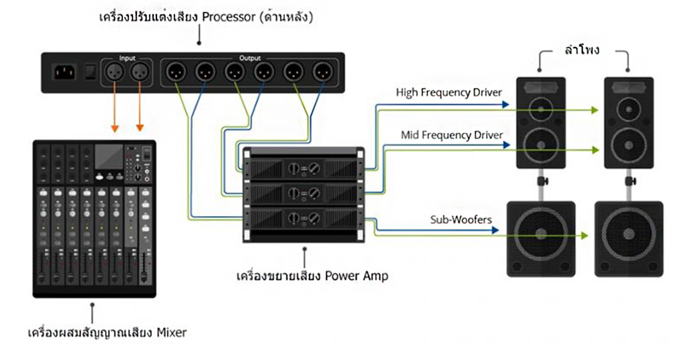
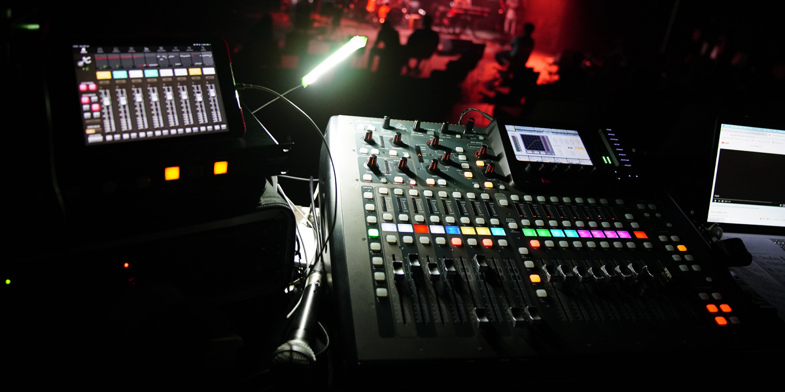

ระบบเสียงเบื้องต้น
หากจะกล่าวถึงระบบเสียงว่าประกอบไปด้วยอะไรบ้าง นั่นคงเป็นสิ่งที่จะให้ตอบได้ทั้งหมดก็คงยากมาก ทั้งนี้ก็เพราะ ขอบเขตของระบบที่มีสำหรับการใช้งานที่แตกต่างกันนั้นมีมากมายมหาศาล ไม่ว่าจะ
เป็น ระบบเสียงสำหรับดูหนัง ฟังเพลงที่บ้าน ระบบเครื่องเสียงในร้านอาหาร ระบบเสียงในผับ ระบบเสียงประกาศตามสาย ไปจนถึง ระบบเครื่องเสียงสำหรับดนตรีสดใบงานคอนเสิร์ตตั้งแต่ขนาดเล็ก ไปจน
ถึงเฟสติวอลขนาดใหญ่ แต่ถึงอย่างไรก็ตาม ระบบเสียงอิเล็กทรอนิกส์ทั้งหมดนั้นล้วนมีพื้นฐานอยู่บนแนวติดง่าย ๆ แบบเดียวกัน ก็คือ ในการนำคลื่นเสียงมาแปลงให้เป็นกระแสไฟฟ้าและจัดการตามที่ต้อง
การ จากนั้นแปลงกลับเป็นคลื่นเสียง ดังนั้นแล้ว อุปกรณ์หลัก ๆ ในระบบเสียงนั้น จึงมีเพียงสองประเภทคือ
ทรานสิวเซอร์ เป็นอุปกรณ์ที่แปลงพลังงานจากรูปแบบหนึ่งเป็นอีกรูปแบบหนึ่ง โดยในระบบเสียงมีอยู่สองทรานสดิวเซอร์ก็คือไมโครโฟน (ทำหน้าที่แปลงพลังงานเสียงเป็นพลังงานไฟฟ้า) ลำโพง
(ห้า หน้าที่แปลงพลังงานไฟฟ้าเป็นพลังงานเสียง)
- แอมปลิฟายเออร์ (Amplifier) หรือมักจะเรียกกันง่าย ๆ ว่าแอมป์ (Amp) คืออุปกรณ์ที่ส่วนใหญ่ทำการเปลี่ยนหรือเพิ่มกว้างของคลื่นเสียงซึ่งก็คือความดังของสัญญาณหรือแอมปลิจูดให้มากขึ้นนั่นเอง

ขั้นตอนการทำงานของ ระบบเสียง
สามารถแบ่งเป็นขั้นตอนได้ดังนี้คือ
กระบวนการเริ่มต้นด้วยแหล่งกำเนิดเสียง (เช่น เสียงมนุษย์) ซึ่งสร้างคลื่นเสียง (พลังงานเสียง)
คลื่นเหล่านี้จะถูกทรานดิวเซอร์ซึ่งก็คือไมโครโฟน แปลงสัญญาณให้เป็น
พลังงานไฟฟ้า
สัญญาณไฟฟ้าที่แปลงมาจากไมโครโฟนจะอ่อนมาก จึงต้องป้อนไปยังเครื่องขยายเสียง เพื่อขยายสัญญาณ
ขั้นตอนสุดท้าย ทรานดิวเซอร์อีกตัว ซึ่งก็คือลำโพงจะแปลงสัญญาณไฟฟ้ากลับ
เป็นคลื่นเสียงที่หูของ
มนุษย์ได้ยินนั่นเอง

องค์ประกอบ ระบบเสียงเบื้องต้น
1. ภาคอินพุต (INPUT) หรือ แหล่งที่มาของเสียง ประกอบด้วยอะไรบ้าง อุปกรณ์ประเภทนี้ทำหน้าที่เป็นแหล่งต้นกำเนิดเสียง หรือ Source ให้เป็นคลื่นไฟฟ้าความถี่เสียง เช่น ไมโครโฟน หรืออีกนัยหนึ่งภาค
สัญญาณเข้า ก็คือ จุดแรกที่รับสัญญาณจากแหล่งกำเนิดเสียง เช่น เสียงร้องเพลง เสียงพูด เสียงเครื่องดนตรี เครื่องเล่นซีดี วีซีดี คอมพิวเตอร์ เครื่องเล่นมัลติมีเดียต่าง ๆ เพื่อเตรียมส่งไปยังภาคขยาย
สัญญาณ
